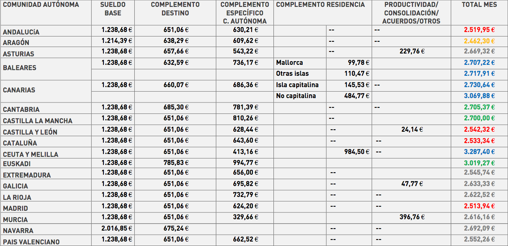

EXERCICI
Es facilita arxiu "Tabla_sueldos.js" amb constant "SUELDOS" que conté un array d'objectes JSON amb el contingut que es veu en la següent imatge.

- Hi ha alguna comunitat autònoma que el COMPLEMENTO ESPECÍFICO és menor a 415? (true/false) posar resposta a l'etiqueta amb id p1
- Quina és la 1ra CA que té un COMPLEMENTO DESTINO superior a 657,66? (només nom de la CA) posar resposta a l'etiqueta amb id p2
- CA's que el COMPLEMENTO ESPECÍFICO està entre 300 i 550 €? (mostrar l'array d'objectes JSON) posar resposta a l'etiqueta amb id p3
- Posició de la 1ra CA que té un COMPLEMENT ESPECÍFICO més gran que la CA BALEARES posar resposta a l'etiqueta amb id p4
- Esborrar la comunitat autònoma que està a la posició 10 posar l'objecte esborrat dins l'etiqueta amb id p5
- Mostrar els objectes ordenats per SUELDO BASE i en cas d'empat per COMPLEMENTO DESTINO i en cas d'empat per COMPLEMENTO ESPECIFICO.
Mostrar el resultat dins l'etiqueta "out". Només mostrar els 4 primers camps de cada objecte. Cada objecte en una línia diferent. Les 4 dades separades per ' - '.
- Esborrar el primer objecte de l'array "SUELDOS". posar l'objecte esborrat dins l'etiqueta amb id p7
- Esborrar el camps de tots els objectes JSON que tenen valor null. posar l'objecte esborrat dins l'etiqueta amb id p8